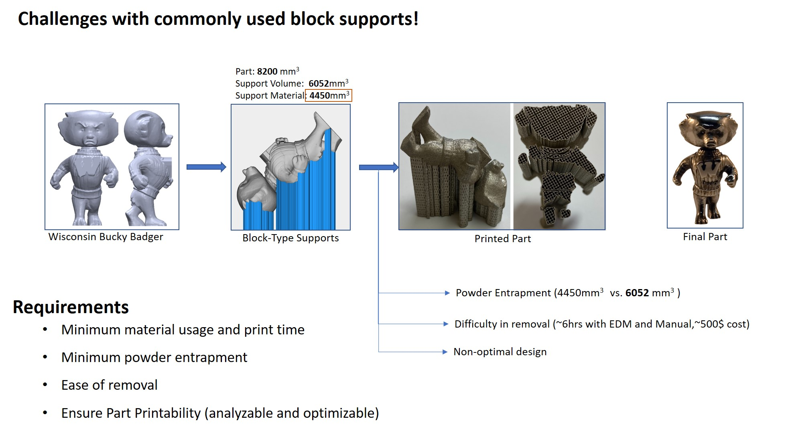
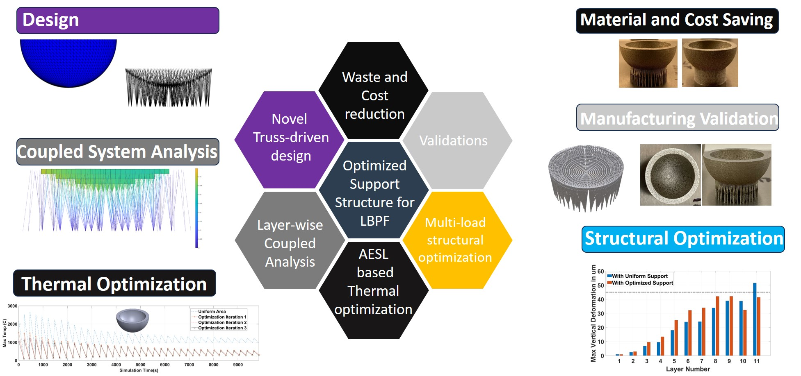

Metal Additive Manufacturing

Support structures are necessary evils in metal additive manufacturing.
Unlike polymer based printing, where supports are purely structural components, in metal additive manufacturing,
these supports act primarily as paths for heat transfer from melt pool to the build plate.
They also hold part in place against the recoil pressure during laser melting. However, the commonly used supports are non-optimal,
difficult to remove and contribute to significant amount of material wastage due to powder entrapment.
Truss-type Supports for LPBF Metal AM

We came up with the idea of using thin truss-type supports were designed, analyzed and optimized to account for time-dependent thermal loads.
These supports were optimized for better thermal behavoir during each layer-wise metal deposition.
Manufacturing validations were carried out for parts with different complexities to demonstrate the advantages of these optimized
in comparison to the commonly used block type designs. These supports did not entrap any powders, saving over 80% of metal powder.
These supports were then used for structural deformation minimization of parts being printed.
Multi-load structural optimization was carried out for the coupled system where, part and supports were analyzed in tandem.
Recoater collision and part deformation were minimized to allowable limits using the optimized supports.
These were funded by US NAVY and US ARMY Grants.
Check Publications for more details.
